|
ABC es un triángulo equilátero. I, J, P son los puntos medios de los lados. Se parte CB en cuatro partes iguales según los puntos E (medio de CP), P y F (medio de PB). Sea H la proyección ortogonal de I sobre EJ y K la proyección ortogonal de F sobre EJ. Sea R el simétrico de H en relación al punto I, S el simétrico de K en relación al punto J, U el simétrico de E en realción a I, y T el simétrico de F en relación a J. Las rectas RU y TS se cortan en V. ¿Están alineados los puntos U, A, T? ¿Es RVSH un cuadrado? |
|
Propuesto por xxx
|
Solución Francisco Javier García Capitán
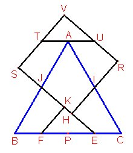
Una primera aproximación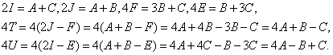
Sumando las dos últimas igualdades,
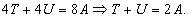
Por tanto en este problema las afirmaciones de los enunciados no tienen nada que ver con el triángulo equilátero, pues la primera propiedad se cumple para cualquier triángulo y la seguna no se cumple para el equilátero.
En el siguiente apartado investigamos cuándo se cumple la segunda parte del enunciado.
Investigación
Usamos Mathematica y el cuaderno Baricentricas.nb para introducir las coordenadas de los primeros puntos de la construcción:
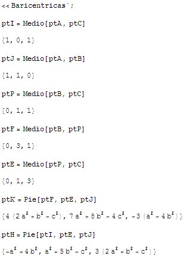
Ahora definimos una función para calcular el simétrico de un punto e introducimos los puntos restantes:
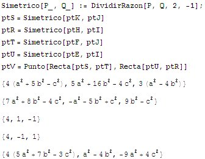
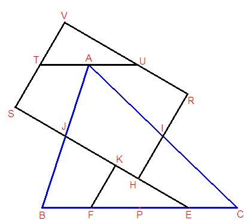
Podemos ver a ojo que la recta TU es x+y=0, y la recta TU contiene al punto A, para cualquier triángulo ABC. También podemos ver esto haciendo el punto medio de T y U, resultando el punto A.Veamos si las rectas SH y VR, SV y HR son paralelas.
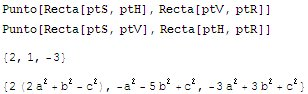
En efecto, lo dos pares de rectas se cortan en puntos cuyas coordenadas suman 0, lo que indica que los puntos de intersección de las rectas son puntos del infinito y RVSH es un rectángulo, para cualquier triángulo ABC.
Investiguemos cuando este rectángulo es un cuadrado:
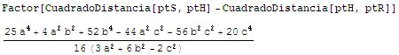
El numerador debe anularse. Haciendo b=a y c=a el numerador se reduce a
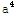
, expresión que no se anula. Por tanto, el rectángulo RVSH no será un cuadrado cuando el triángulo es equilátero.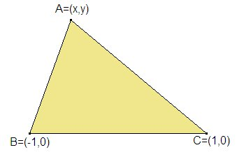
Para hallar los triángulos ABC para los cuales el triángulo RVSH es un cuadrado elegimos un sistema de coordenadas en el que B=(-1,0), C=(1,0) son fijos y A=(x,y) es variable. Entonces escribimos: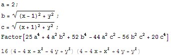
Vemos entonces que el lugar geométrico del vértice A está formado por dos circunferencias de radio 2 centradas en los puntos (2,2) y (-2,2).